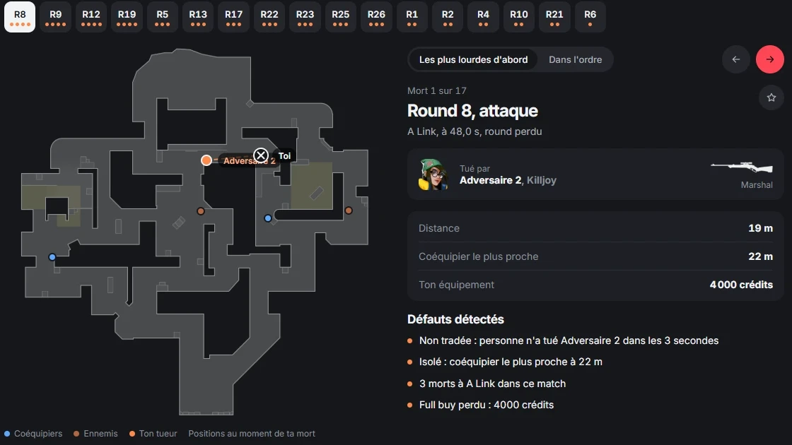
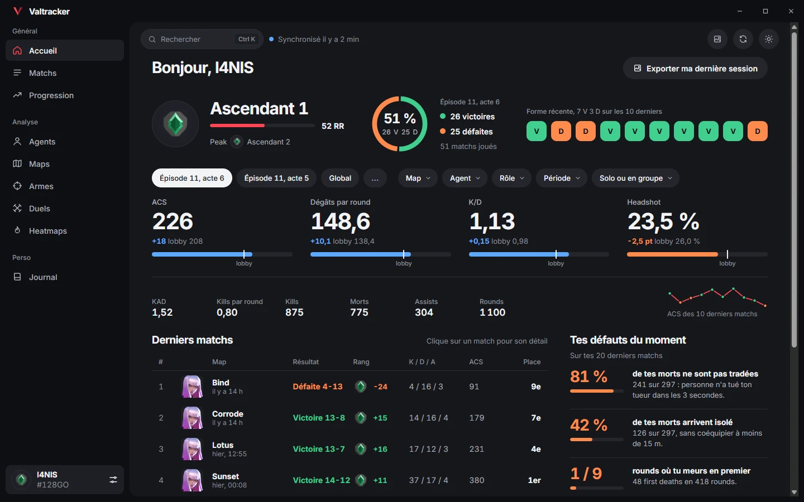
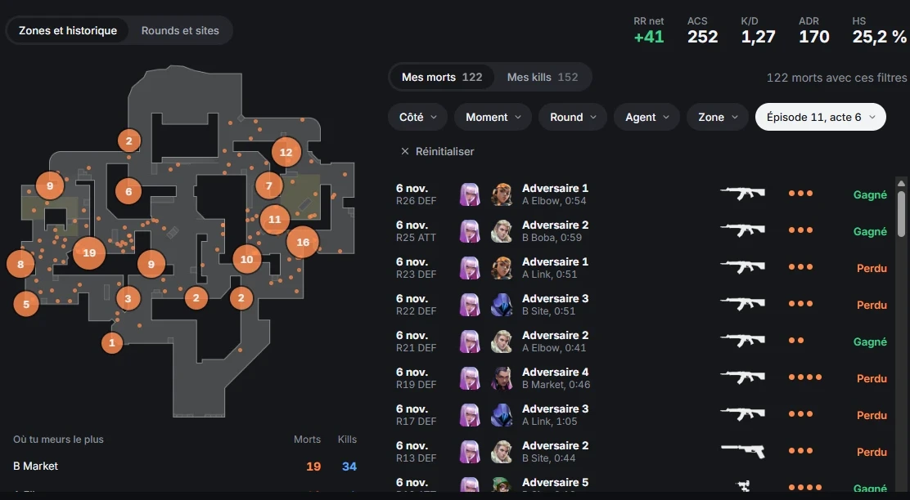
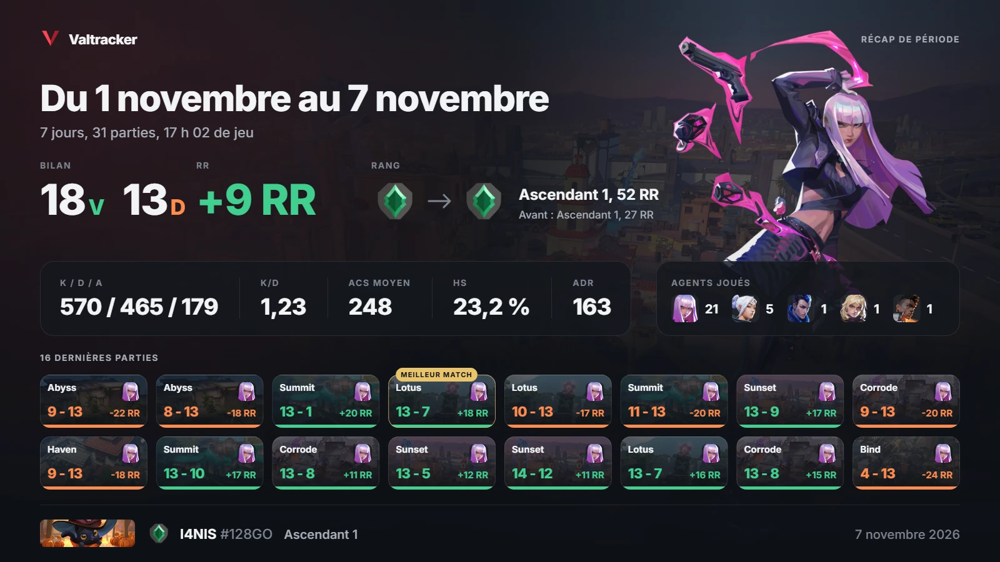
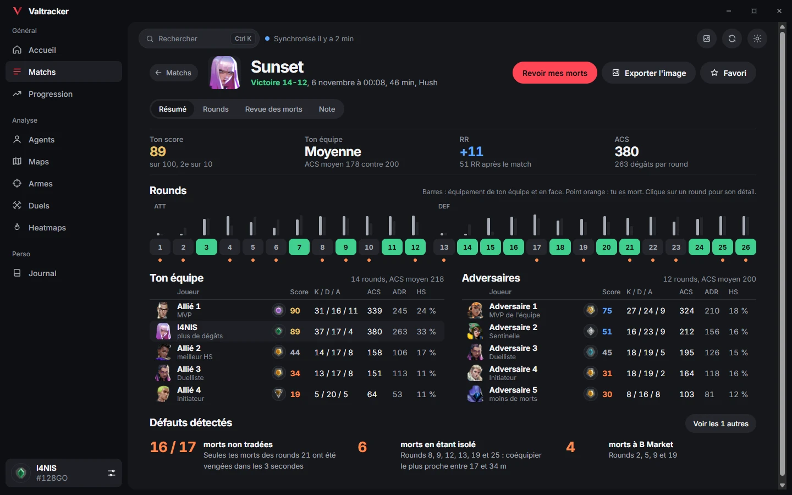
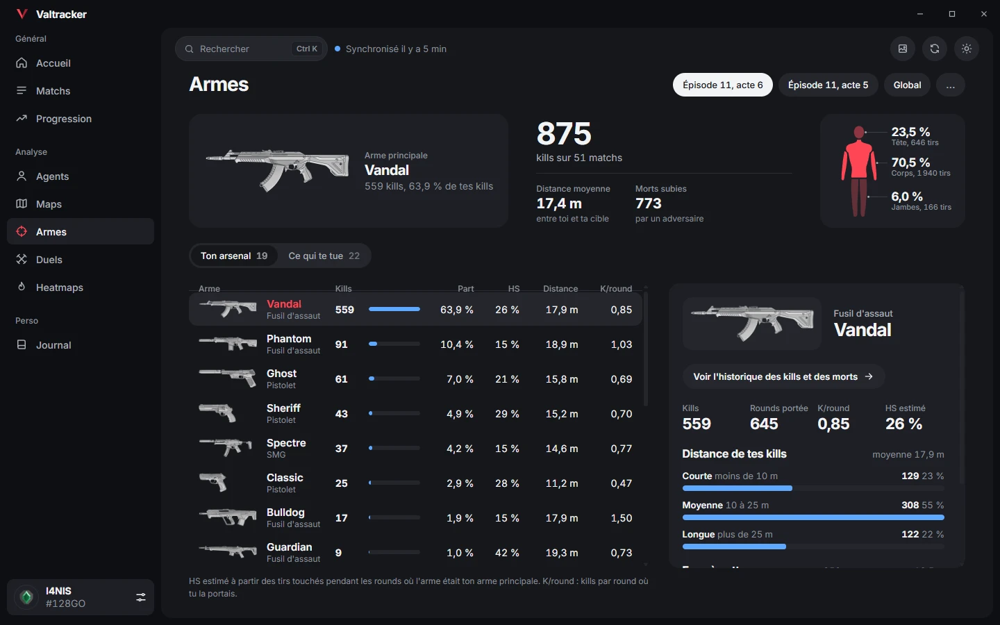
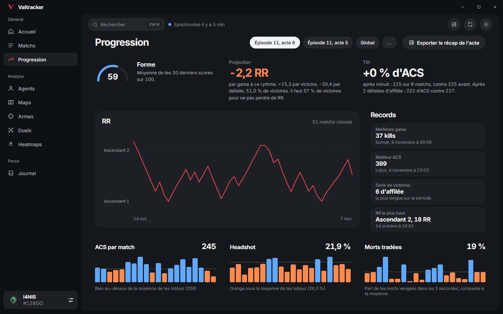

Chaque mort analysée
Rejouée sur la minimap, avec la position de tous les joueurs au moment du kill.
Tes stats Valorant, tes matchs et chacune de tes morts, sur ton PC.
Version 1.0, Windows 10 et 11, gratuit

Chaque partie classée est analysée dès qu'elle est terminée.

Rejouée sur la minimap, avec la position de tous les joueurs au moment du kill.

Où tu meurs et où tu tues, zone par zone, avec l'historique de chaque mort.

Un match, une période ou un acte en image, copiée en un clic.

Score sur 100 des 10 joueurs, économie de chaque round et RR gagné ou perdu.

Kills, headshots et distance des duels pour chaque arme, et les armes qui te tuent.

Courbe de RR, actes passés, stats par patch et records Riot.
Valtracker-setup.exe, la dernière version.
L'installation ne demande aucun droit administrateur.
Ton Riot ID et une clé API gratuite, à créer sur le tableau de bord HenrikDev.
Rien ne tourne pendant tes parties. Valtracker ne lit jamais le jeu ni le client Valorant. Les données viennent de l'API HenrikDev, une fois les matchs terminés.
Mises à jour automatiques. Une nouvelle version est proposée au lancement et s'installe en un clic. Tes données restent sur ton PC.
Valtracker n'a pas de certificat de signature payant. Windows ne connaît donc pas son éditeur et peut afficher un avertissement, ou bloquer le téléchargement par précaution.
C'est l'écran bleu de SmartScreen, au lancement de l'installateur.
Microsoft Defender supprime le fichier téléchargé. La détection se termine par !ml : c'est une estimation automatique, fréquente pour les applications récentes et non signées.
Ce que tu peux vérifier. Le code source est public, sous licence MIT. Chaque version est compilée par GitHub Actions à partir de ce code, et les journaux de compilation sont publics. Les mises à jour automatiques sont signées : l'application refuse toute mise à jour qui ne vient pas de ce dépôt.